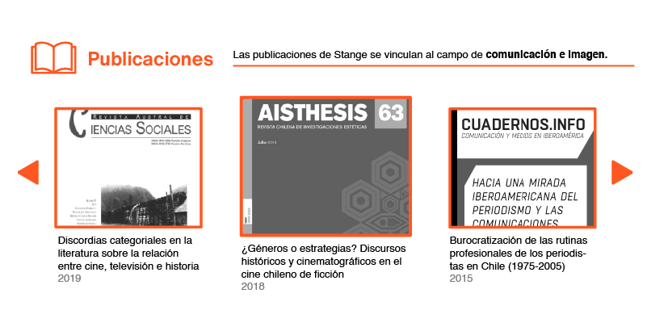
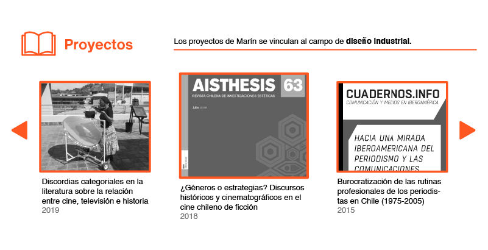

Hans Stange Marcus
Profesor asistente
Adscrito al departamento de Diseño
correo@correo.com
- Estudios
- Periodismo, Universidad de Chile
- Filosofia blabla, Universidad de Chile
Mi enfoque incluye blablabla
Áreas prioritarias en investigacion y creación en la facultad arqui
- Área prioritaria 7: cultura aasjksjks
- área 8 blabla
lineas de inves del departamento de diseño
- estudios visuales y mediales
enfasis ciclo 3
- investigacion
- creacion




¿Cómo se relaciona su nota aprobatoria previa, de Proyecto de Título I, con la nota definida por la comisión examinadora de Proyecto de Título II?
¿Qué parte de las inscripciones en la asignatura de Proyecto de Título II con se han convertido en Exámenes de Título aprobados?
| Egresado/a | Título | Semestre | Proyecto | Nota |
|---|